15 Wrangling Categories with forcats
15.1 Factors = Categories. That’s It.
If you have ever made a bar chart in R and wondered why the bars are in alphabetical order instead of something useful — congratulations, you have discovered why factors exist.
A factor is just R’s fancy word for a categorical variable: things like survey responses (“Agree”, “Neutral”, “Disagree”), product categories, regions, departments, or customer segments. Under the hood, it is a text variable with a defined set of allowed values (called levels) in a specific order.
Why should you care about the order? One reason: ggplot2 uses factor order to arrange your charts. Alphabetical bars are the data visualization equivalent of an unsorted resume — technically complete, but nobody wants to read it.
The forcats package (part of the tidyverse, loaded automatically) gives you simple tools to fix that. Let’s see the problem first.
15.2 The Problem: Alphabetical Everything
# A character vector
satisfaction <- c("Low", "Medium", "High", "Low", "High")
# When you make it a factor, R defaults to alphabetical order
factor(satisfaction)
#> [1] Low Medium High Low High
#> Levels: High Low MediumThe levels are “High”, “Low”, “Medium” — alphabetical, not logical. You want “Low”, “Medium”, “High.” That is the entire reason this chapter exists.
# Fix it by specifying levels
factor(satisfaction, levels = c("Low", "Medium", "High"))
#> [1] Low Medium High Low High
#> Levels: Low Medium HighThis manual approach works for three levels. When you have real data with dozens of categories, forcats makes it painless.
15.4 fct_reorder() — THE Most Important Function
If you learn one thing from this chapter, make it this one. fct_reorder() reorders a factor by the values of another variable. In plain English: it sorts your bar chart bars so they actually make sense.
Think of it this way: if your bar chart were a PowerPoint slide, fct_reorder() is the difference between your manager saying “what am I looking at?” and “great insight.” Here is the before-and-after.
Without reordering:
relig_summary <- gss_cat %>%
group_by(relig) %>%
summarize(
avg_tv = mean(tvhours, na.rm = TRUE),
n = n()
)
ggplot(relig_summary, aes(x = avg_tv, y = relig)) +
geom_point() +
labs(title = "TV Hours by Religion (unsorted chaos)",
x = "Mean TV hours per day", y = NULL) +
theme_minimal()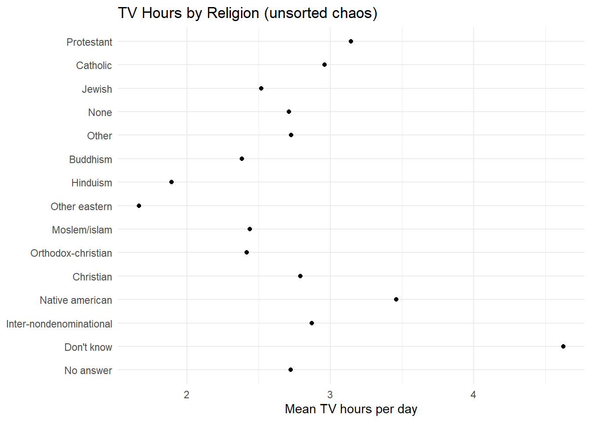
Figure 15.1: Religion by TV hours, unsorted. Good luck finding patterns here.
Now with fct_reorder():
ggplot(relig_summary, aes(x = avg_tv, y = fct_reorder(relig, avg_tv))) +
geom_point() +
labs(title = "TV Hours by Religion (sorted --- much better)",
x = "Mean TV hours per day", y = NULL) +
theme_minimal()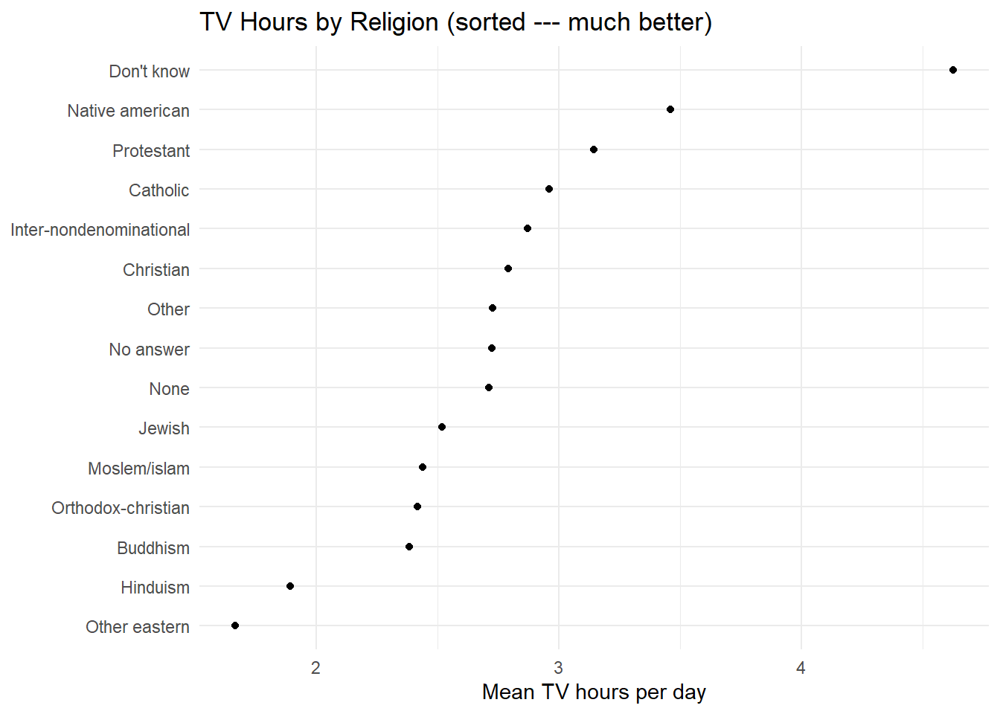
Figure 15.2: Same data, but now sorted by value. The story jumps right out.
Same data. Sorted version tells a story instantly. This is the difference between a chart that gets glanced at and one that gets discussed.
iris %>%
group_by(Species) %>%
summarize(mean_petal = mean(Petal.Length)) %>%
ggplot(aes(x = mean_petal, y = fct_reorder(Species, mean_petal))) +
geom_col(fill = "steelblue") +
labs(title = "Mean Petal Length by Species", x = "Mean Petal Length", y = NULL) +
theme_minimal()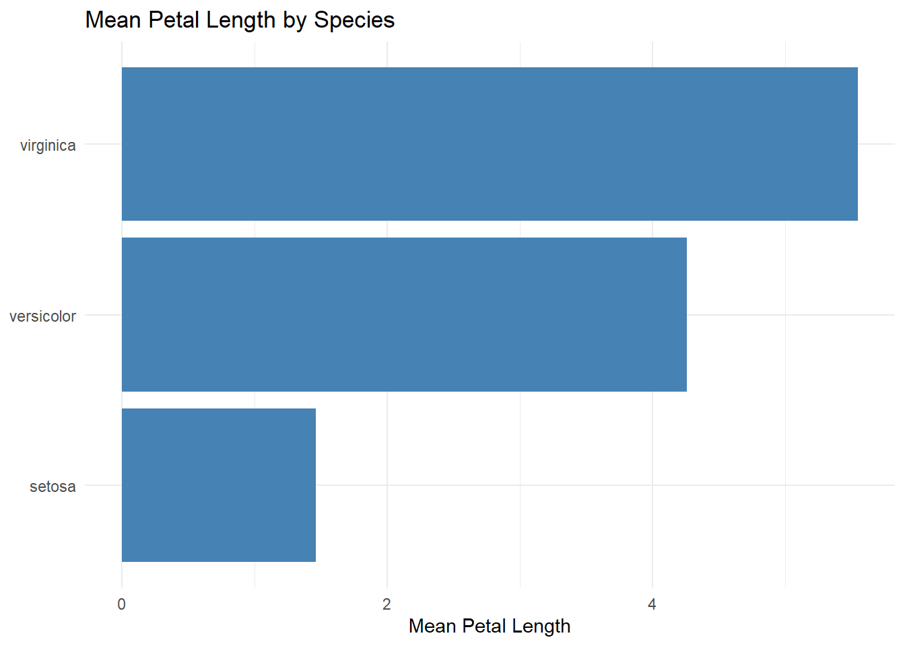
Figure 15.3: Mean petal length by iris species, sorted by value.
Rule of thumb: Making a bar chart or dot plot with categories? Use fct_reorder(). Always. No exceptions. Your audience will thank you by not falling asleep.
15.5 fct_infreq() — Sort by Count
Sometimes you just want bars sorted by how many observations are in each category — most popular first, like a bestseller list. That is fct_infreq().
gss_cat %>%
mutate(marital = fct_infreq(marital)) %>%
ggplot(aes(x = marital)) +
geom_bar(fill = "steelblue") +
labs(title = "Marital Status (sorted by frequency)", x = NULL, y = "Count") +
theme_minimal()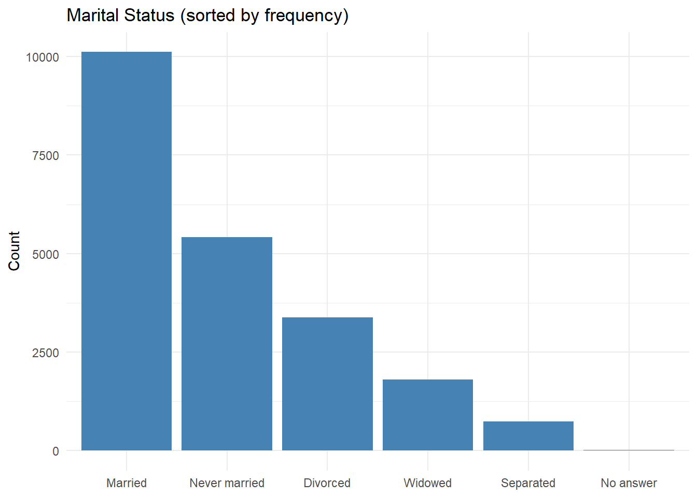
Figure 15.4: Marital status bars sorted by frequency. Most common categories jump out immediately.
Combine it with fct_rev() for a horizontal bar chart that reads top-to-bottom (the way humans naturally read):
gss_cat %>%
mutate(marital = fct_rev(fct_infreq(marital))) %>%
ggplot(aes(y = marital)) +
geom_bar(fill = "darkorange") +
labs(title = "Marital Status (highest count at top)", x = "Count", y = NULL) +
theme_minimal()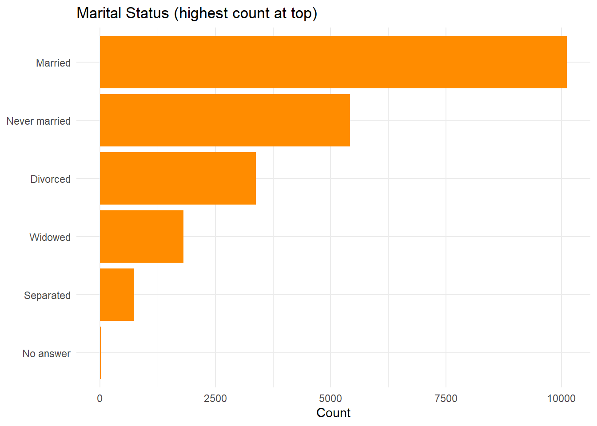
Figure 15.5: Horizontal bars with the most common status at the top.
15.6 fct_relevel() — Manual Ordering
Sometimes you need a specific order that is not alphabetical or by frequency. Maybe “Never married” is your reference group in a regression, or you need income brackets from low to high. fct_relevel() lets you move specific levels wherever you want — like rearranging slides in a deck.
# Default level order
levels(gss_cat$marital)
#> [1] "No answer" "Never married" "Separated" "Divorced"
#> [5] "Widowed" "Married"
# Move "Never married" to the front
gss_cat %>%
mutate(marital = fct_relevel(marital, "Never married")) %>%
pull(marital) %>%
levels()
#> [1] "Never married" "No answer" "Separated" "Divorced"
#> [5] "Widowed" "Married"
# Move "Widowed" to the end
gss_cat %>%
mutate(marital = fct_relevel(marital, "Widowed", after = Inf)) %>%
pull(marital) %>%
levels()
#> [1] "No answer" "Never married" "Separated" "Divorced"
#> [5] "Married" "Widowed"And the chart payoff:
gss_cat %>%
mutate(marital = fct_relevel(marital,
"Never married", "Married", "Separated",
"Divorced", "Widowed", "No answer")) %>%
ggplot(aes(x = marital)) +
geom_bar(fill = "steelblue") +
labs(title = "Marital Status (life-stage order)", x = NULL, y = "Count") +
theme_minimal()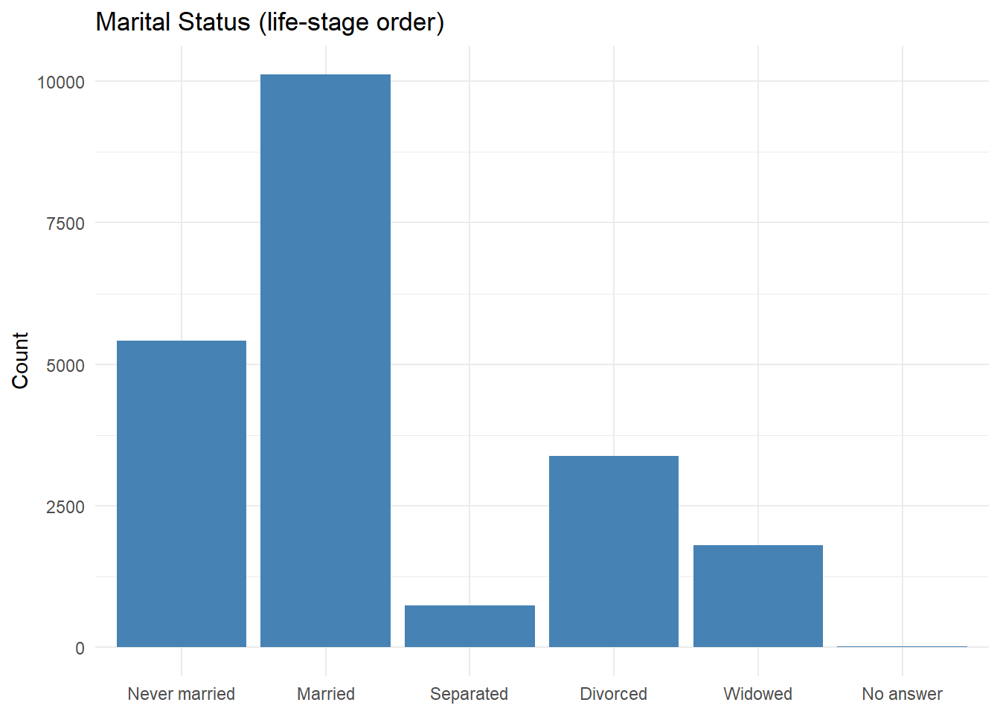
Figure 15.6: Marital status in a custom order that tells a life-stage story.
Now the bars tell a life-stage story: never married, married, separated, divorced, widowed. Much more intuitive than whatever “alphabetical” was trying to communicate.
15.7 fct_recode() — Rename Your Categories
Survey data often arrives with labels that look like someone’s internal database codes. fct_recode() lets you rename levels with a simple "new name" = "old name" syntax. Think of it as “Find and Replace” for category labels.
gss_cat %>%
mutate(partyid = fct_recode(partyid,
"Republican (strong)" = "Strong republican",
"Republican (weak)" = "Not str republican",
"Independent (near rep)" = "Ind,near rep",
"Independent (near dem)" = "Ind,near dem",
"Democrat (weak)" = "Not str democrat",
"Democrat (strong)" = "Strong democrat"
)) %>%
count(partyid)
#> # A tibble: 10 × 2
#> partyid n
#> <fct> <int>
#> 1 No answer 154
#> 2 Don't know 1
#> 3 Other party 393
#> 4 Republican (strong) 2314
#> 5 Republican (weak) 3032
#> 6 Independent (near rep) 1791
#> 7 Independent 4119
#> 8 Independent (near dem) 2499
#> 9 Democrat (weak) 3690
#> 10 Democrat (strong) 3490Also great when your data has labels like “1”, “2”, “3” that should really say “Strongly Disagree”, “Neutral”, “Strongly Agree.” Your stakeholders should never have to decode numbers on a chart.
15.8 fct_collapse() — Merge Categories Together
Sometimes you have too many categories and need to consolidate. fct_collapse() merges multiple levels into new groups. Think of it as the “department reorganization” of your data — fewer groups, cleaner org chart.
gss_cat %>%
mutate(partyid = fct_collapse(partyid,
"Republican" = c("Strong republican", "Not str republican"),
"Independent" = c("Ind,near rep", "Independent", "Ind,near dem"),
"Democrat" = c("Not str democrat", "Strong democrat"),
"Other" = c("No answer", "Don't know", "Other party")
)) %>%
count(partyid)
#> # A tibble: 4 × 2
#> partyid n
#> <fct> <int>
#> 1 Other 548
#> 2 Republican 5346
#> 3 Independent 8409
#> 4 Democrat 7180And the chart payoff — a clean, executive-summary-ready political affiliation plot:
gss_cat %>%
mutate(party = fct_collapse(partyid,
"Republican" = c("Strong republican", "Not str republican"),
"Independent" = c("Ind,near rep", "Independent", "Ind,near dem"),
"Democrat" = c("Not str democrat", "Strong democrat"),
"Other" = c("No answer", "Don't know", "Other party")
)) %>%
mutate(party = fct_infreq(party)) %>%
ggplot(aes(x = party, fill = party)) +
geom_bar(show.legend = FALSE) +
scale_fill_manual(values = c(
"Democrat" = "blue", "Independent" = "gray50",
"Republican" = "red", "Other" = "gray80"
)) +
labs(title = "Political Affiliation (simplified)", x = NULL, y = "Count") +
theme_minimal()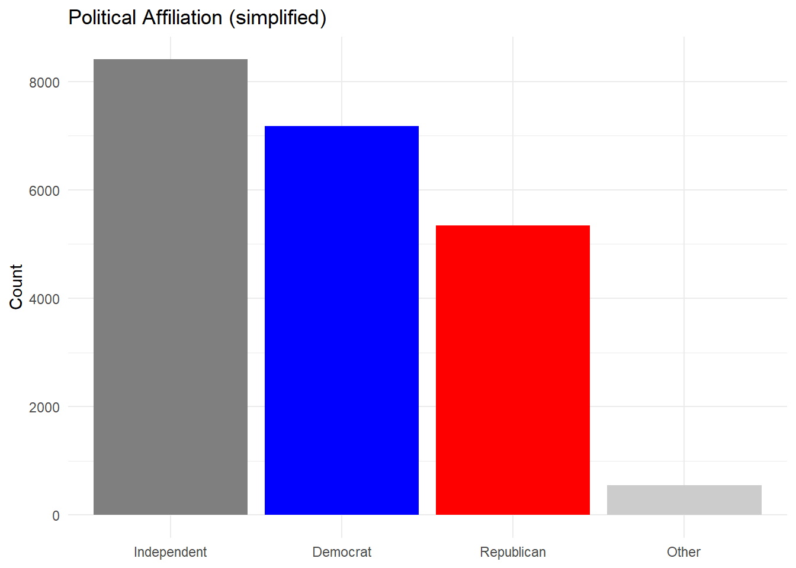
Figure 15.7: Political affiliation after collapsing into four clean groups.
Went from 10 confusing categories to 4 clean ones. That is a chart your VP can actually read from across the conference table.
15.9 fct_lump() — “Show Me the Top N, Lump the Rest”
This is the function you reach for when you have a variable with 30+ categories. Nobody wants a bar chart with 30 bars — that is not a chart, that is a picket fence. fct_lump_n() keeps the top N categories and lumps everything else into “Other.”
# Keep the 4 most common religions, lump the rest
gss_cat %>%
mutate(relig = fct_lump_n(relig, n = 4)) %>%
count(relig, sort = TRUE)
#> # A tibble: 5 × 2
#> relig n
#> <fct> <int>
#> 1 Protestant 10846
#> 2 Catholic 5124
#> 3 None 3523
#> 4 Other 1301
#> 5 Christian 689The chart version — before and after lumping:
gss_cat %>%
count(denom) %>%
ggplot(aes(x = n, y = denom)) +
geom_point() +
labs(title = "All Denominations (information overload)", x = "Count", y = NULL) +
theme_minimal()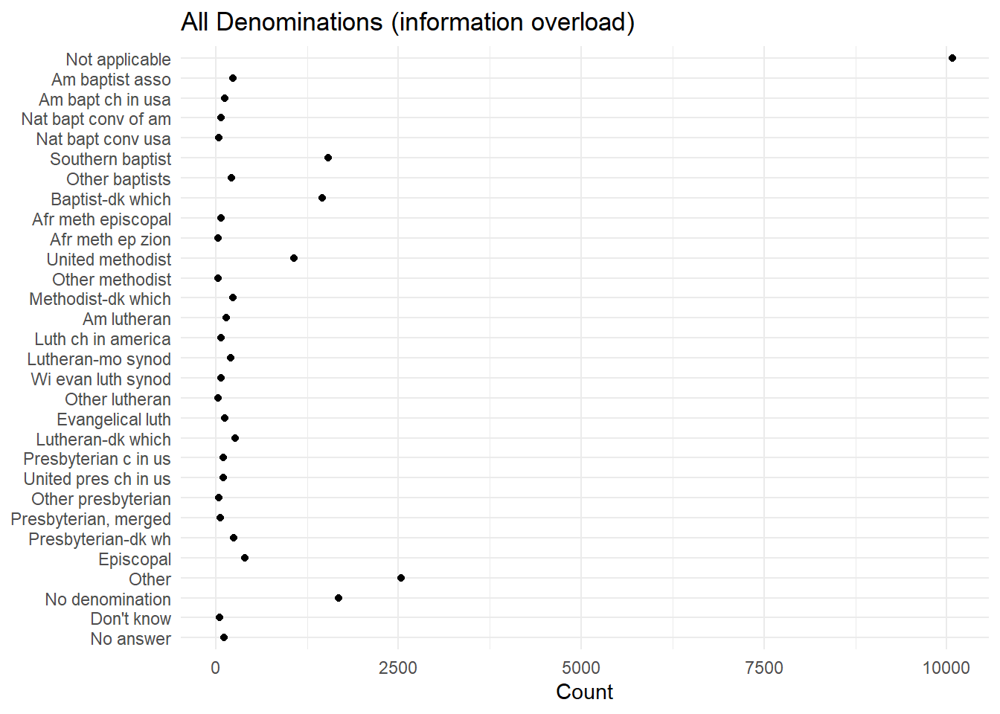
Figure 15.8: All denominations shown. Way too many categories to be useful.
gss_cat %>%
mutate(denom = fct_lump_n(denom, n = 8)) %>%
count(denom) %>%
mutate(denom = fct_reorder(denom, n)) %>%
ggplot(aes(x = n, y = denom)) +
geom_point(size = 3, color = "steelblue") +
labs(title = "Top 8 Denominations (rest lumped into Other)",
x = "Count", y = NULL) +
theme_minimal()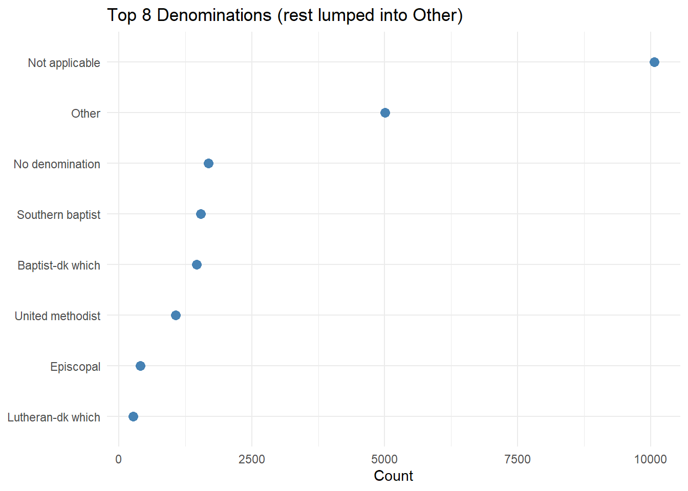
Figure 15.9: Top 8 denominations with the rest lumped into Other. Now this is readable.
There are a few variants depending on how you want to decide what gets lumped:
-
fct_lump_n(x, n = 5)— keep top 5 -
fct_lump_prop(x, prop = 0.10)— keep categories with at least 10% of the data -
fct_lump_min(x, min = 100)— keep categories with at least 100 observations
Pick whichever matches your question.
15.10 Bonus: Making mtcars Charts Better with Factors
The mtcars dataset has variables like cyl (cylinders) and am (transmission) coded as numbers. They are really categories wearing a numerical disguise. Converting them to factors with meaningful labels instantly makes your charts presentation-ready.
mtcars %>%
mutate(
cyl = factor(cyl),
transmission = factor(am, levels = c(0, 1), labels = c("Automatic", "Manual"))
) %>%
group_by(cyl, transmission) %>%
summarize(mean_mpg = mean(mpg), .groups = "drop") %>%
ggplot(aes(x = cyl, y = mean_mpg, fill = transmission)) +
geom_col(position = "dodge") +
scale_fill_brewer(palette = "Set2") +
labs(title = "Mean MPG by Cylinders and Transmission",
x = "Number of Cylinders", y = "Mean MPG", fill = "Transmission") +
theme_minimal()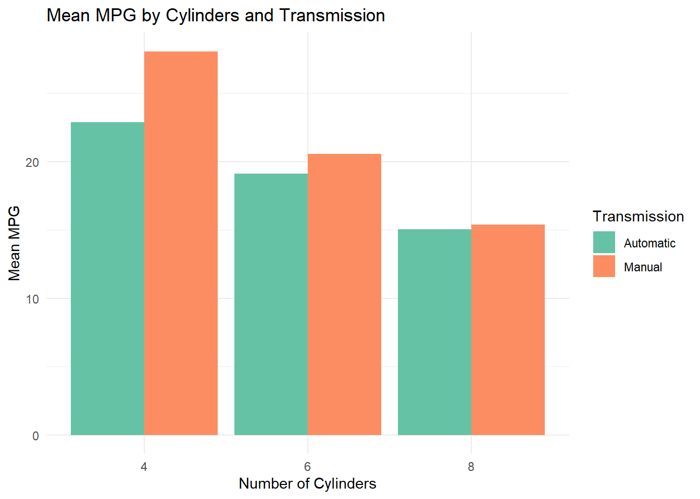
Figure 15.10: Mean MPG by cylinders and transmission. Labeled factors make this chart presentation-ready.
Without factors, those bars would just say “0” and “1” for transmission. With factors, they say “Automatic” and “Manual.” Small change, enormous difference in whether your audience has any idea what they are looking at.
15.11 fct_reorder2() — Aligning Legends with Lines
Quick bonus for line charts. When you have multiple lines, the legend should match the visual order of the lines at the right edge of the plot. fct_reorder2() handles this automatically — a small detail that makes your charts look polished.
gss_cat %>%
filter(!is.na(age)) %>%
mutate(marital = fct_lump_n(marital, n = 4)) %>%
count(age, marital) %>%
group_by(age) %>%
mutate(prop = n / sum(n)) %>%
ungroup() %>%
ggplot(aes(x = age, y = prop, color = fct_reorder2(marital, age, prop))) +
geom_line(linewidth = 1) +
scale_color_brewer(palette = "Set1") +
labs(title = "Marital Status by Age",
x = "Age", y = "Proportion", color = "Status") +
theme_minimal()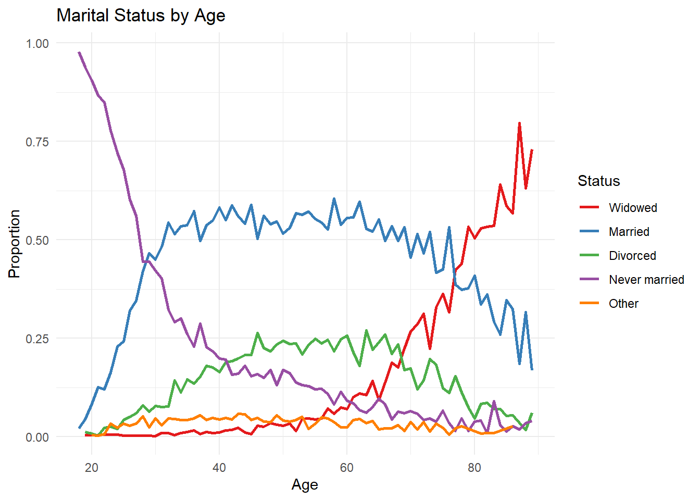
Figure 15.11: Line chart where the legend order matches the line positions at the right edge.
15.12 Quick Reference
Your factor toolkit at a glance:
| What you want to do | Function | When to use it |
|---|---|---|
| Sort bars by a value | fct_reorder() |
Almost every bar/dot chart |
| Sort bars by count | fct_infreq() |
“Show me what’s most common” |
| Reverse the order | fct_rev() |
Horizontal bar charts (top to bottom) |
| Set a custom order | fct_relevel() |
Life stages, survey scales, custom sorts |
| Rename categories | fct_recode() |
Cryptic labels need human-readable names |
| Merge categories | fct_collapse() |
Too many groups, need to simplify |
| Keep top N, lump rest | fct_lump_n() |
30 categories? Nobody wants that chart |
The single most impactful habit from this chapter: always use fct_reorder() or fct_infreq() in your ggplot2 charts. Alphabetical ordering is almost never the most informative ordering. A well-ordered factor is the difference between a confusing chart and one that gets you promoted. Well, maybe not promoted — but at least not asked to redo it.